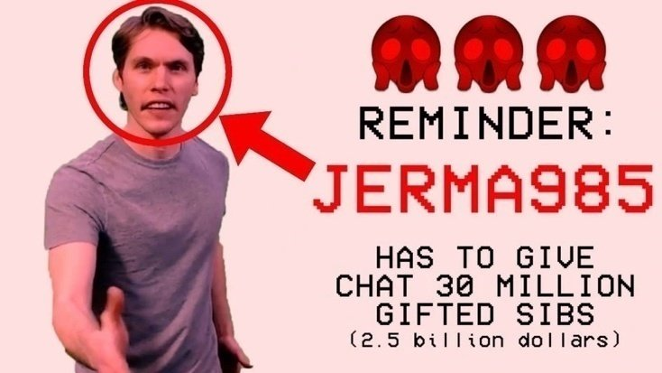

What is Twitch?
Twitch is an online platform that was initially made for gaming, however, now it is a lot more. Talk-shows and IRL streams are very popular.
Twitch is an online platform that was initially made for gaming, however, now it is a lot more. Talk-shows and IRL streams are very popular.
The game that I watch the most is a strategy called Heroes of Might and Magic 3. Released in 1999, this game still has a pretty big and active community. I used to play it with my dad as a kid and watching and playing it now is very cool and nostalgic.
Jerma is one of my favourite streamers on the website. He's been doing youtube and twitch for almost 10 years, yet he is consistently funny and entertaining. His chat is also a big plus of the channel. It is always nice to hang out with other viewers. During one of the streams he made a bet with chat that if he doesn't hit his next shot, he has to gift 30 million subs. Of course, he missed.
